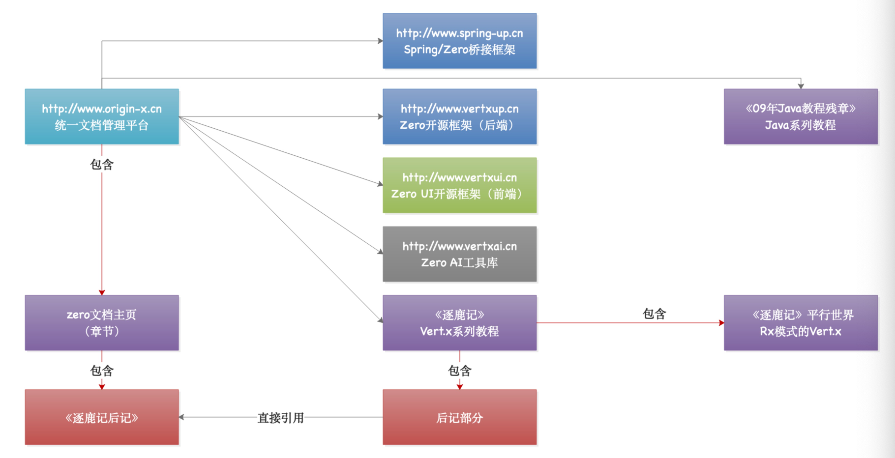

回到始源之地
人可以一辈子不去登山，可是心里一定要有座山，有了这座山，你才不会迷失自己的方向，任何时候，抬起头来就可以看到自己的希望。 ——2002年 随风杨 赠。
我们总是不知道自己要什么，同样，我们也不清楚生活的目标究竟在哪，于是视之为迷茫。很多时候，在前行途中，我们看多了风景，引起了视觉的疲劳，回过头来却忘记了自己的初衷。开设这个项目的目的只是为了搭建自己的知识库，也可以称为个人知识库，从Zero（http://www.vertxup.cn）到Zero UI（http://www.vertxui.cn）开源也快有一年的时间了，各种文档错综复杂，少了脉络，使得读者略显疲乏，于是重新整理一份完整的知识库，系统通过整理，将真正有价值的东西呈现出来。
1. 环境准备
Origin X Doc是为Origin X Engine量身打造的文档型项目，使用gitbook可直接本地化成电子书方便查阅，不仅仅如此，本文档中收录了更多在开发过程中的心得以及环境搭建过程中遇到的种种问题，希望真正对读者有所帮助。
1.1. 本地化
在自己的本机使用下边命令安装一个静态服务器，推荐使用 serve
sudo npm install -g serve然后执行根目录的Shell脚本：
./book-server.sh用浏览器打开地址：http://localhost:1231/，您就可以访问本地化的 Origin X Doc的主页了。
1.2. 在线版
在线的版本发布在新的域名下，地址：http://www.origin-x.cn，这里枚举当前系统关联的所有在线地址：
| 地址 | 说明 |
|---|---|
| http://www.vertxup.cn | 「后端」Zero框架主页 |
| http://www.vertxui.cn | 「前端」Zero UI框架主页 |
| http://www.vertxai.cn | 「工具」Zero 自动化工具主页 |
| http://www.spring-up.cn | 和Spring的协同工作桥接器主页 |
由于文档的工作量巨大，大部分文档都是整理的以前的原创，再加上整个几个项目都是由我一个人主体维护，大家都是采取业余时间在处理整个体系的文档以及开源代码，所以有些文档可能会出现残章以及不全的地方，请读者见谅。
2. 文档说明
2.1. 前缀说明
前缀说明一直是我在写文档过程中的一个习惯（不谈好坏），通过前缀将文档本身进行分类，使得文档标题具有更明确的类型指向，而不是任何时候都需要通过类型树来对文档进行定位，通过前缀使得文章本身的目录更具有“引导”的意义，也方便在文档量大的情况下更加妥善管理，形成体系。
2.2. 文档分类
| 文档前缀 | 分类说明 | 目录主页 |
|---|---|---|
| KM | 通用知识库 | 通用知识库主页 |
| EN | 环境搭建相关知识库 | 环境搭建知识库主页 |
| | -- EAI | 「子」Zero Ai的使用 | |
| ZRO | Zero相关知识库（后端） | Zero 文档主页 |
| | -- ZVX | 「子」Vert.x碎碎念 | |
| | -- ZVJ | 「子」Java语言基础（犯懒重写中） | 《09年Java博客残章》 |
| | -- ZBR | 「子」《逐鹿记》附录 | 《逐鹿记》 |
| ZUI | Zero UI相关知识库（前端） | Zero UI文档主页 |
| | -- ZUA | 「子」Zero UI实战分析 | |
| OX | Origin X Engine知识库 | Origin X Engine文档主页 |
| | -- OXC | 「子」Origin X 自定义组件 | |
| | -- OXA | 「子」Origin X 实战分析 | |
| SPC | 开发规范文档主页 | 开发规范文档主页 |
| | -- SPR | 「子」RESTful设计规范 | |
| UT | Utility X工具包说明 |
2.3. 网络拓扑
下图是目前统一文档管理平台的整体网络拓扑图，同一类型的东西使用相同颜色。

3. 总结
我希望通过 Origin X Doc这个项目将所有目前手中的资料串联起来，统一化管理，主要目标如下：
- Zero的官方文档大部分是代码、缺乏思路，对于“攻击型“的开发者，完全足够用了，但对于”防守型“的开发者，很多时候不太理解里面的一些思路，所以本系列文档希望通过更加原生态的说明来解析开发过程中的一些相关信息。
- Zero UI的官方文档原始版本还比较好，后期采用了所见即所得的版本，对很多开发人员可能比较噩梦，虽然我们已经在至少三个生产系统中使用了两者，但更多缺乏的是教程式的文档。
写在篇末
Origin X名字来源于伊苏起源，那是一个让你去追溯真理和源头的故事，跟着所有的线索，冲破重重困难，真正去找寻最终答案的故事。X表示“未知”，整个项目的名字来源于三毛的《梦里花落知多少》的序：“从生的生、到死的死、从已知到未知、从未知到已知、爱的神秘、灵魂的离奇、宇宙中透露着的是层层的迷。”，所以Origin X的名字含义很简单——探索未知世界的起源，是否存在某种可以统一的“理”（并不是脑袋一拍想出来的）。Zero名字来源于高达W中的“飞翼零式”，实际上深层次的含义是：空杯为零，具有一个空杯心态，一切以此为始，真正让系统达到“无胜于有”的境界，让开发人员深度去思考这个世界，看是否可以透过双手，一切从零做起，逐步去影响这个世界。
�
�